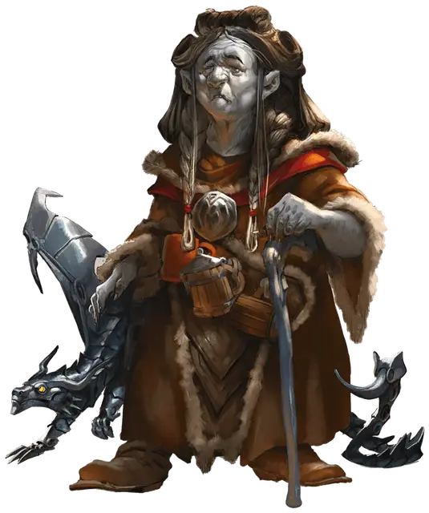

Грандолфа Музгардт
Grandolpha Muzgardt
Средний Гуманоид (Дварф), законно-злой, именной НИП

Класс Доспеха 9
Хиты 59 (7к8 + 28)
Скорость 25 футов
| мод | спас | ||
|---|---|---|---|
| СИЛ | 14 | +2 | +2 |
| ЛОВ | 9 | −1 | −1 |
| ТЕЛ | 18 | +4 | +4 |
| мод | спас | ||
|---|---|---|---|
| ИНТ | 13 | +1 | +1 |
| МДР | 17 | +3 | +3 |
| ХАР | 16 | +3 | +3 |
Сопротивление урону яд
Чувства тёмное зрение 120 футов, пассивное Восприятие 13
Языки Общий, Дварфийский, Подземный
Опасность 2 (450 опыта)
Бонус мастерства +2
Особенности
Дуэргарская устойчивость. Грандолфа совершает с преимуществом спасброски от яда, заклинаний и иллюзий, а также спасброски для сопротивления очарованию и параличу.
Врождённое колдовство (псионика). Базовой характеристикой Грандолфа является Мудрость (Сл спасброска от заклинания 13). Она может накладывать следующие заклинания, не нуждаясь ни в каких компонентах:
• Неограниченно: искусство друидов [druidcraft], починка [mending], ядовитые брызги [poison spray] (см "Действия" ниже);
• 3/день каждое: обнаружение магии [detect magic], увеличение/уменьшение [enlarge/reduce] (только на себя), огонь фей [faerie fire], невидимость [invisibility] (только на себя), превращение [polymorph], каменная кожа [stoneskin] (только на себя);
Чувствительность к солнечному свету. Находясь на солнечном свету, Грандолфа совершает с помехой броски атаки, а также проверки Мудрости (Восприятие), полагающиеся на зрение.
Действия
Ядовитые брызги. Грандолфа простираете руку к существу, видимому в пределах 10 футов, и выпускаете из ладони клубы токсичного газа. Это существо должно преуспеть в спасброске Телосложения Сл 13, получая в случае провала 13 (2к12) урона ядом.
Описание
Грандолфа Музгардт, великая дама клана дуэргар Музгардт, недавно прибыла в крепость по приглашению Зардорока. Музгардты базируются в Граклстаге, городе дуэргаров в Подземье. Они массово производят и распространяют грязный дуэргарский эль, приготовленный из грибов. Зардорок страстно желал взять четвертую жену и уже много лет как положил глаз на Грандолфу Музгардт. Он пригласил Грандолфу в свою крепость, чтобы сделать ей подарок — псевдодракона из чардалина (псевдо-псевдодракона, если хотите) — и сделать ей предложение, от которого она не сможет отказаться. Как только он завоюет Долину Ледяного Ветра, он хочет, чтобы Музгардты контролировали торговлю элем по всему его королевству без солнца на поверхности.
Грандольфа, со своей стороны, слишком хитра и пресыщена, чтобы поддаться на грубую попытку Зардорока соблазнить. Она начала сговариваться с лишёнными гражданских прав советниками и воинами в его рядах, чтобы свергнуть его, когда настанет подходящий момент. По иронии судьбы, несмотря на свою паранойю, Зардорок слишком ослеплен своим восхищением Грандолфой, чтобы предвидеть ее предательство.
Прежде чем вступить в бой, Грандолфа накладывает на себя каменную кожу [stoneskin]. Как только ее охранники приходят ей на помощь, она выходит из боя и накладывает огонь фей [faerie fire], чтобы ее охранникам было легче атаковать врагов. Псевдодракон чардалин защищает Грандолфу до смерти.